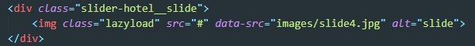

Проверка скорости загрузки сайта происходит на портале GOOGLE SPEED
Так же через Photoshop уменьшаем размер изображений. К примеру у нас на сайте используются аватарке, по верстке они 50 на 50 пикселей. Зачем загружать фотку размером 600 на 600
В VS Code устанавливаем плагин svgo. Далее открываем через VS Code svg картинку жмем по экрану ПКМ и выбираем Minify current SVG file
Заходим в панель управления, выбираем WWW-домены, выбираем наш домен. Крутим в самый низ до раздела оптимизация WWW-домена
Для того что бы Live SASS compiller минифицировал CSS файл, необходимо в настройках плагина (в JSON файле) в разделе format задать значение compressed. Для отмены задаем значение expanded
Как бороться с этим замечанием:
Раскрываем это предложение и жмем подробнее, далее жмем по ссылке:
Откроется страница плагина, который обеспечиваем ленивую загрузку изображений. Качаем библиотеку отсюда
Подключаем эту библиотеку к нашему сайту
После этого тем картинкам, на которые жаловался GOOGLE SPEED меняем атрибуты как сказано в инструкции
т.е. добавляем класс lazyload и добавляем data атрибут src, куда помещаем путь до нашей картинке. Что бы валидатор не ругался, мы атрибуту src задаем заглушку (#)/ Вот как это выглядит:
Странно, но google maps могут тормозить загрузку сайта, для этого нам надо написать скрипт который будет добавлять frame c картой по какому-нибудь событию. Я например сделал так что карта загружалаь по скролу (как только скролл дойдет до меню сайта, загружается frame)
Что бы шрифты не тормозили загрузку, необходимо добавить атрибут display=swap. Google fonts автоматом вставляет этот атрибут, но если мы подключаем шрифты локально, то этот атрибут нужно добавить вручную